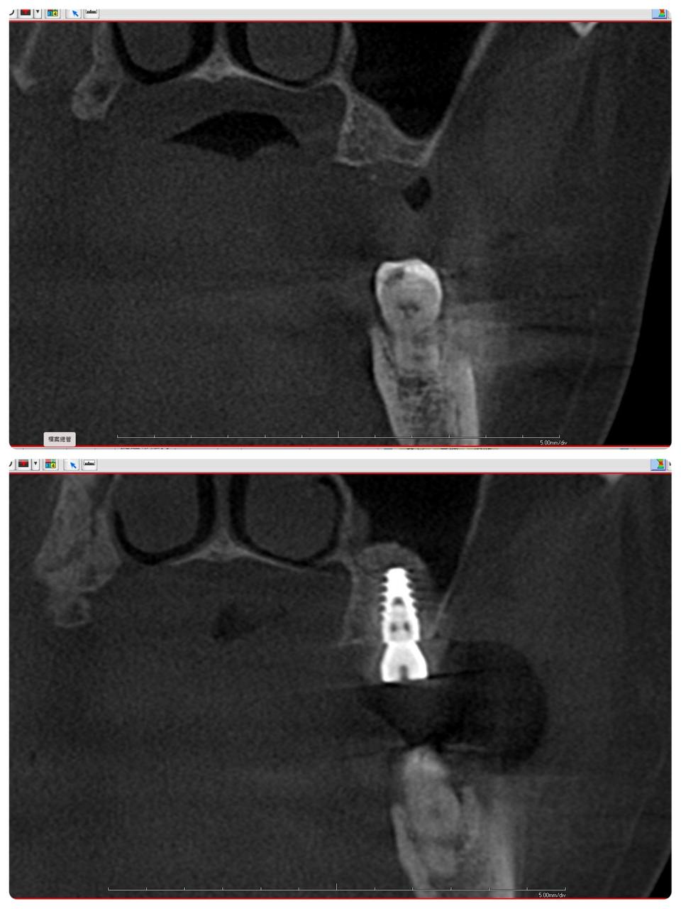
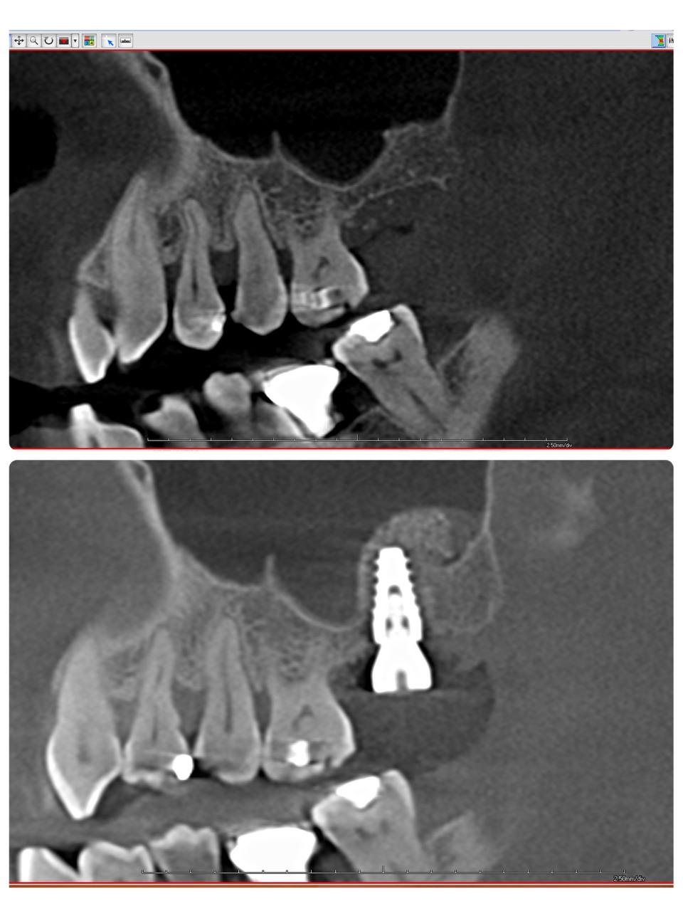
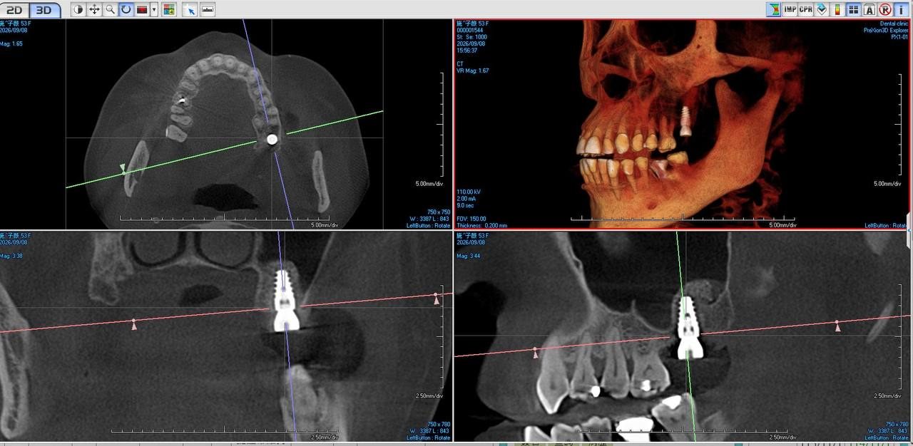
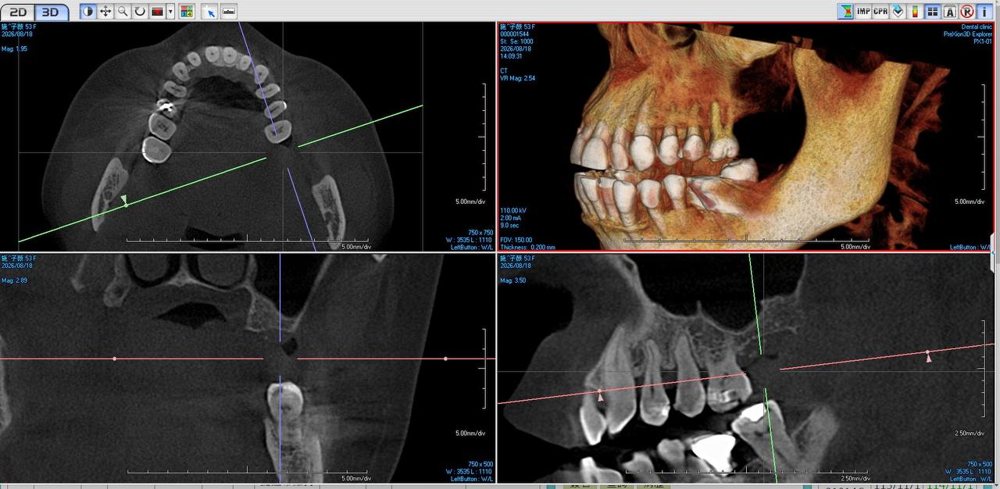

上顎竇提升術：技術，決定傷口大小
微創內開式手術案例分享
患者最常問的話
「醫師，我問過別的地方，他們說這個手術很複雜，要開很大的傷口⋯⋯」
每次聽到這句話，我都知道，患者之前得到的資訊，可能來自於一位經驗還不夠純熟的醫師。
上顎後牙區的植牙，確實經常需要合併「上顎竇提升術」。這個手術的技術門檻高，醫師的經驗與手法，直接決定了患者的傷口大小、術後恢復快慢，甚至整個植牙的成敗。
骨頭不夠，不是患者的錯
上顎竇是鼻腔兩側的空腔，像一個會慢慢膨脹的氣球。當大臼齒長期缺牙，這個氣球會向下擴張，原本應該厚實的骨頭，被壓得越來越薄。
這不是患者能控制的。這是時間造成的結果。
問題是：骨頭不夠，植體就無法穩固。就像要把一根螺絲釘入薄板，釘子會穿透、會鬆動。沒有足夠的骨質支撐，植牙遲早會失敗。
所以，上顎竇提升術的目的，就是在有限的空間裡，為植體創造一個穩固的家。
技術的差異：大傷口 vs. 微創
同樣是「上顎竇提升術」，不同醫師的做法，天差地遠。
傳統外開式手術（側窗術）
經驗不足的醫師，面對骨量嚴重不足的情況，往往只能選擇從側邊翻開大傷口，直接打開鼻竇外壁，手工剝離黏膜，再填入骨粉。術後腫脹明顯，恢復期長，患者的不適感也重。
內開式微創手術（內部上顎竇提升術）
這才是真正考驗醫師技術的時候。
經驗純熟的醫師，不需要翻開大傷口。從植牙的位置，用特殊器械輕輕頂升鼻竇黏膜，在同一個小傷口中完成補骨與植牙。傷口小、出血少、術後幾乎不太腫，患者當天就能正常進食。
🔑 關鍵差別在哪裡？
不是器械，是手感。
鼻竇黏膜薄如蟬翼，頂升的力道多一分會破，少一分不到位。骨粉填入的量與位置，決定了未來骨頭生長的品質。植體植入的角度與深度，影響了將來假牙的美觀與功能。
這些細節，沒有足夠的臨床經驗，做不到。
為患者設想的每一個決定
一個以患者為中心的醫師，在擬定治療計畫時，不會只問「能不能做」，而是會問：
- 怎麼做，患者的傷口最小？
- 怎麼做，患者的恢復最快？
- 怎麼做，長期的結果最穩定？
這三個問題，決定了手術的每一個步驟。
本次案例手術結果
以今天的案例來說，患者上顎左側第二大臼齒長期缺牙，骨量明顯不足。若選擇外開式手術，患者要承受更大的傷口與更長的恢復期。但評估後，我相信可以用微創內開式完成——這個判斷，來自於過去無數次手術累積的經驗，也來自於對這位患者具體狀況的仔細評估。
單一小傷口
無需翻開側窗
鼻竇黏膜完整
無破損
骨粉均勻包覆
植體頂端
植體角度與
穩定度理想
術前術後 CBCT 對比（2026/09/08）
每張影像上半部為植牙前、下半部為植牙後，同一切面直接對比




▲ 同一時間點（2026/09/08）術後拍攝，不同切面同時呈現術前術後對比。透過微創內開式手術，不需翻開大傷口即可完成補骨與植牙。
患者離開診所時，幾乎感覺不到自己做了什麼大手術。
這，就是技術的價值。
給正在考慮植牙的你
如果你被告知「骨頭不夠，要做上顎竇提升術」，請不要只問「多少錢」。
請問你的醫師：
- 「您一年做多少例上顎竇提升術？」
- 「您會用微創內開式，還是外開式？」
- 「術後我大概會腫多久？」
經驗純熟的醫師，不會迴避這些問題。
上顎竇提升術本身並不可怕。可怕的是，交給一個經驗不足、無法為你選擇最小傷口途徑的醫師。
⚠️ 關鍵提醒
- 缺牙越久，骨頭流失越多，手術難度越高
- 同樣的手術名稱，技術內涵可能完全不同
- 選擇醫師，比選擇植體品牌更重要
科技渥爾牙診所 簡院長
我們相信：醫師的技術，是給患者最好的安慰。